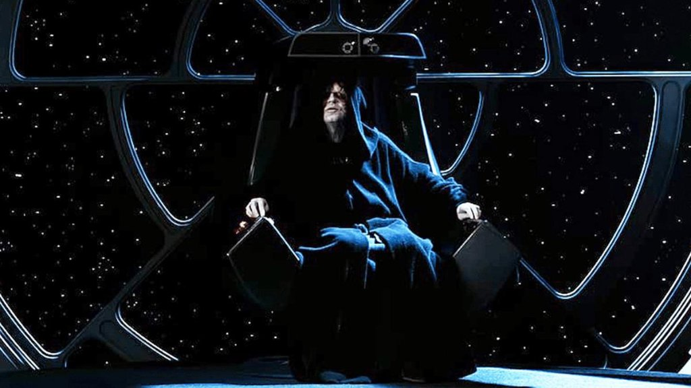

BEWERBUNG ZUM LORE-CHARAKTER IMPERATOR SHEEV PALPATINE alias Darth Sidious // „Imperator Keksi“
Es ist an der Zeit, dass die Galaxis endlich wieder in geordneten Verhältnissen lebt. Zu viele Rebellen, zu wenig Kekse und eindeutig zu wenig imperiale Führung!
Sehr geehrtes Serverteam von Aufbau des Imperiums, hiermit bewerbe ich mich offiziell als Lore-Charakter für die Rolle des Imperators. Ich möchte nicht bloß einen Titel tragen, sondern eine der vielschichtigsten, manipulativsten und einflussreichsten Ikonen des Star-Wars-Universums auf eurem Server mit Leben, Atmosphäre und erstklassigem Roleplay füllen.
Strategische Tiefe
Langfristiges Intrigenspiel statt impulsiver Gewaltausbrüche.
Ruhige Autorität
Ein Imperator muss nicht schreien, um gehört und gefürchtet zu werden.
Der Keksi-Faktor
Gesunder Humor & sympathische Nähe, die das Server-Klima bereichert.
Community First
Möglichkeiten und Bühnen für Mitspieler, Offiziere & Truppler schaffen.
OOC Infos & Online-Zeiten
Persönliche Daten des Bewerbers, Roleplay-Erfahrungen und wöchentliche Aktivitätszeiten auf dem Server.
Out of Character (OOC) Informationen
Hier finden Sie alle offiziellen Real-Life- und Spieler-Informationen zu meiner Person:
Cookie Milky
Wöchentliche Online-Zeiten
Feste und verlässliche Präsenzzeiten auf dem Server Aufbau des Imperiums:
| Wochentag | Uhrzeit (Präsenz) | Status |
|---|---|---|
| Montag | 17:00 – 22:30 Uhr | Verfügbar |
| Dienstag | 17:00 – 22:30 Uhr | Verfügbar |
| Mittwoch | 17:00 – 22:30 Uhr | Verfügbar |
| Donnerstag | 17:00 – 22:30 Uhr | Verfügbar |
| Freitag | 16:30 – 01:00+ Uhr | Open End |
| Samstag | 14:00 – 01:00+ Uhr | Open End |
| Sonntag | 14:00 – 22:30 Uhr | Verfügbar |
Warum der Lore-Charakter (Palpatine)?
Die Faszination für Darth Sidious – Warum ausgerechnet Sheev Palpatine als Lore-Charakter?
Der Architekt der Galaxis
Warum bewerbe ich mich ausgerechnet für Imperator Sheev Palpatine und nicht für einen Standard-Sith oder einen imperialen Offizier?
Für mich ist Palpatine die mit Abstand faszinierendste Figur der gesamten Star-Wars-Saga. Er ist kein Sith, der blindlings mit dem Lichtschwert durch die Gänge rennt oder seine Untergebenen aus purer Laune hinrichtet. Seine wahre Macht liegt in seiner Geduld, seiner subtilen Manipulation und seiner politischen Brillanz.
Er hat über Jahrzehnte hinweg die gesamte Galaxis wie ein gigantisches Schachspiel gelenkt: Er war gleichzeitig der ehrenwerte Oberste Kanzler der Republik und im Verborgenen Darth Sidious. Diese unglaubliche Dualität im Roleplay mit Leben zu füllen, ist eine unvergleichliche schauspielerische und erzählerische Herausforderung, die ich mit größtem Respekt vor der Lore angehen möchte.
„Palpatine zu spielen bedeutet nicht, der Lauteste auf dem Server zu sein. Es bedeutet, der Faden zu sein, der alle Ereignisse im Hintergrund zusammenhält.“
Als Lore-Charakter möchte ich auf Aufbau des Imperiums eine echte Atmosphäre schaffen: Ehrfurcht, wenn der Thronsaal betreten wird, diplomatische Verhandlungen mit Tiefgang und das Gefühl, dass jede Entscheidung Gewicht für die Zukunft des Servers hat.
Politische Staatskunst
Palpatine ist das Staatsoberhaupt. Er verkörpert die imperiale Bürokratie, Gesetzgebung und die Neue Ordnung – nicht bloß rohe Gewalt.
Tiefe & Mysterium
Die dunkle Seite der Macht als ehrfürchtiges Geheimnis behandeln, das Neugier weckt und Sith-Schülern echte RP-Lehren bietet.
Dreh- und Angelpunkt für Events
Vom Thronsaal aus können imperiale Feldzüge, Flottenmanöver und Sektor-Konflikte für die gesamte Community ins Rollen gebracht werden.
Warum Du? (Warum Nico Kaschube?)
Die Philosophie hinter der Bewerbung – Größenwahn mit Köpfchen, dunkle Seite mit System und Loyalitätskekse.
Ein Imperator namens Keksi
Mein Name ist Nico Kaschube, wobei mich die meisten wahrscheinlich eher unter meinem wohlverdienten Titel Imperator Keksi kennen. Manche nennen mich auch Cookie Milky oder schlicht Kekse.
Und seien wir ehrlich: Ein Imperator mit dem Namen Keksi? Das klingt doch bereits nach einer galaktischen Erfolgsgeschichte!
Hiermit möchte ich mich als Lore-Charakter für Imperator Sheev Palpatine bewerben. Ich möchte nicht nur einen Charakter spielen, sondern eine Persönlichkeit verkörpern, die das Star-Wars-Universum maßgeblich geprägt hat.
„Natürlich bringe ich dafür die nötige Portion Größenwahn, strategisches Denken und eine ordentliche Prise dunkle Seite mit. Die Kekse werden selbstverständlich nur bei entsprechender imperialer Loyalität verteilt.“
Natürlich darf auch der typische Palpatine-Humor nicht fehlen. Ein gelegentliches „Good, good!“ gehört schließlich zum guten Ton eines Sith-Lords.
Verantwortung statt Machtmissbrauch
Mir ist bewusst, dass Imperator Palpatine eine besondere Schlüsselposition einnimmt. Ich möchte nicht einfach nur den höchsten Rang besitzen, um anderen plumpe Befehle zu erteilen. Ich möchte eine Geschichte erzählen, Entscheidungen treffen und gemeinsam mit anderen Spielern ein fesselndes imperiales Roleplay aufbauen.
Das Bäckerei-Prinzip
„Denn was ist ein Imperium ohne seine Untergebenen? Richtig: Eine ziemlich große Bäckerei ohne Kundschaft!“
Mir ist essenziell wichtig, dass nicht nur ich Spaß habe, sondern dass jeder Spieler – vom Kadetten bis zum Flottenadmiral – bedeutsame Interaktionen und Entwicklungsmöglichkeiten erhält.
Das richtige Keksrezept der Macht
Der Name Imperator Keksi ist fast eine göttliche Fügung. Vielleicht war die dunkle Seite der Macht die ganze Zeit nur auf der Suche nach dem richtigen Rezept, um Ordnung, Respekt und Spielspaß auf dem Server zu vereinen.
Meine Pläne für das Imperium
Ich möchte die Position des Imperators nutzen, um das Roleplay auf dem Server aktiv, abwechslungsreich und nachhaltig zu bereichern.
Regelmäßige imperiale Audienzen
Der Thronsaal wird kein toter Raum sein: Geplante und spontane Audienzen für Offiziere, Statthalter, Sith-Schüler und Diplomaten bieten stetige RP-Anlaufstellen.
Politische Gespräche & Dekrete
Diplomatie auf Augenhöhe und hinter verschlossenen Türen. Verhandlungen mit Sektorgouverneuren und hochrangigen Würdenträgern über Gesetze und imperiale Expansion.
Strategische Kriegsplanungen
Große Lagebesprechungen am Holotisch mit der imperialen Admiralität und Generalität. Truppenverlegungen, Anti-Guerilla-Operationen und Kampagnen gegen Rebellen.
Beförderungen & Auszeichnungen
Verdiente imperiale Mitglieder werden feierlich geehrt, befördert und mit kaiserlichen Dekreten ausgezeichnet. Anerkennung steigert Loyalität und Spielmotivation!
Entscheidungen über die Zukunft
Dynamisches Server-Geschehen: Richtungsweisende Entscheidungen, Reaktionen auf Server-Events, Ressourcenverteilung und der Bau imperialer Prestigeprojekte.
Spannungen: Militär, Sith & Senat
Fein austariertes Beziehungsgeflecht zwischen eiskalter Militärbürokratie, mystischen Sith-Interessen und ziviler Verwaltung, um facettenreiche Konflikte zu schüren.
Wer ist eigentlich dieser Palpatine?
Fundiertes Star-Wars-Hintergrundwissen und die 5 Säulen meiner Charakterinterpretation.
Der Aufstieg des Meisters der Täuschung
Sheev Palpatine, besser bekannt als Darth Sidious, gehört zu den einflussreichsten und gefährlichsten Sith-Lords der gesamten galaktischen Geschichte.
Geboren auf der idyllischen Welt Naboo, begann sein Aufstieg zunächst auf dem scheinbar harmlosen Parkett der planetaren und galaktischen Politik. Als geheimer Schüler von Darth Plagueis dem Weisen erlernte er die tiefsten Geheimnisse der dunklen Seite der Macht und entwickelte sich zu einem unübertroffenen Meister der Manipulation, Täuschung und Geduld.
Unter seiner öffentlichen Identität als integrer Senator und späterer Oberster Kanzler gelang es ihm, die Galaktische Republik von innen heraus zu unterwandern, zu lenken und schließlich zu Fall zu bringen.
Die Klonkriege waren dabei das ultimative Meisterstück seines Plans: Während die Galaxis in Angst, Zerstörung und Chaos versank, sammelte Palpatine schrittweise Notstandsbefugnisse an, bis ihm die Senatoren schließlich mit tosendem Applaus die absolute Herrschaft übertrugen.
Mit der Ausrufung der Neuen Ordnung erklärte er die Gründung des Galaktischen Imperiums und ernannte sich selbst zum Imperator.
„Sein Ziel: eine Galaxis unter seiner Herrschaft, in der Ordnung herrscht und niemand auf die dumme Idee kommt, eine Rebellion zu gründen. Außer natürlich, man möchte Bekanntschaft mit der imperialen Sicherheitsabteilung machen.“
Chronologie des Aufstiegs
Geburt auf Naboo, Ausbildung im Verborgenen unter Darth Plagueis und Erlernen der tiefsten Sith-Mysterien.
Wie würde ich Palpatine spielen?
„Ich möchte Palpatine nicht als jemanden darstellen, der permanent herumschreit und jedem seine Macht demonstriert. Ein echter Imperator muss nicht laut werden, damit andere zuhören.“
Seine wahre Stärke liegt in seiner beherrschten Ruhe, seinem strategischen Weitblick und seiner Gabe, Menschen wie Schachfiguren auf einem galaktischen Brett zu platzieren.
1. Politik & Staatskunst
Gewichtige Entscheidungen treffen, hochrangige diplomatische Gespräche führen und stets die imperialen Staatsinteressen über Einzelschicksale stellen.
2. Subtile Manipulation
Situationen geschickt lenken, Zwietracht säen, wo nötig, und langfristige Pläne verfolgen, sodass Untergebene glauben, es sei ihre eigene Idee gewesen.
3. Unantastbare Autorität
Ein würdevolles, furchteinflößendes Auftreten gegenüber Offizieren, Flottenführern, Sith und fremden Gesandten – durch Haltung, nicht durch Brüllen.
4. Weitsichtige Strategie
Die Entwicklung des Imperiums schrittweise vorantreiben, logistische und militärische Entscheidungen mit Bedacht und Konsequenz fällen.
5. Lore-treue Dunkle Seite
Die Macht entsprechend der Star-Wars-Lore respektvoll behandeln und nicht als albernes Alltagsspielzeug für jede banale Situation missbrauchen.
Das imperiale Kontrollzentrum
Keks-Logistik & imperiales Soundboard: Verwalten Sie die kaiserlichen Keks-Rationen und rufen Sie authentische Sprachübertragungen des Imperators ab!
„Die Kekse werden selbstverständlich nur bei entsprechender imperialer Loyalität verteilt. Was ist ein Imperium ohne Untergebene? Eine Bäckerei ohne Kundschaft!“
Schlusswort des Bewerbers
Zum Abschluss möchte ich mich herzlich für die Zeit und Aufmerksamkeit bedanken, die ihr euch für meine Bewerbung nehmt.
Ich würde mich sehr darüber freuen, Imperator Sheev Palpatine auf eurem Server Aufbau des Imperiums verkörpern zu dürfen und gemeinsam mit der Community die Zukunft des Galaktischen Imperiums mit Spannung, Würde und unvergesslichen Momenten zu gestalten.
Möge die dunkle Seite der Macht mit euch sein.